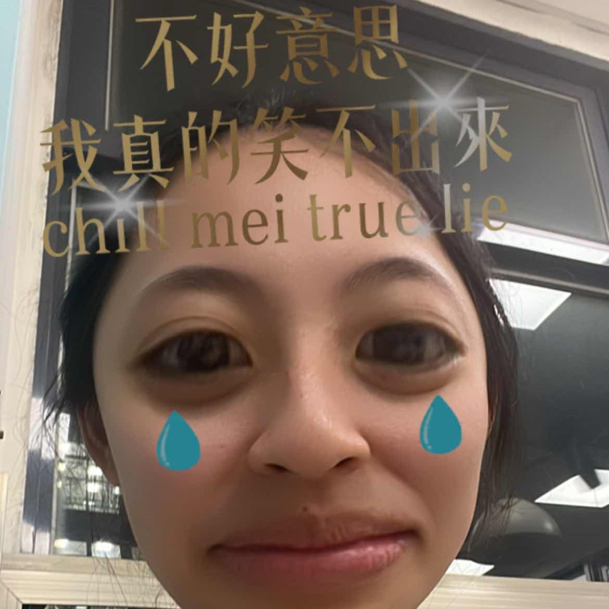

鍾昌宇 心得 有了上學期慘痛的經驗，我們這次在合作和事前規劃上都做了更完善的準備，從版本控制到整合，我覺得比上學期好很多。此外組員們的肝都很硬，所以我覺得時間還算充裕。在這次的專題中，我也發現我比想像中的沒有那麼喜歡前端，雖然剛開始很有成就感，但後來就覺得都在處理差不多的問題。 張維峰 心得 對於這次前後端期末，我負責的是前端的部分，不知道是否因為上學期的緣故，這學期的整合從感覺上變得沒那麼緊湊，有更多的空間去創造，也非常感謝其他組員們，對於前端的組員謝謝他們能在必要時給予我一些小建議，然後對於後端的組員也謝謝他們積極的提供意見，總體來說這次的專題我學到了很多。 劉千睿 心得 這次的專題我們負責的是前端的部分，從使用Figma設計網頁UI一直到使用HTML、CSS、JS實際產出網頁架構都由我們一手包辦，完成後十分有成就感，從專題中我也學到了專案的協作與前後端整合技巧，最重要的是團隊之間的溝通，感謝我的組員們都很願意溝通討論，並給予彼此幫助，也感謝後端組員們盡力的配合我們修改專案內容，讓這次的專題逐漸接近我們理想的狀態。 蔡佳昀 心得 上學期做前端，這學期換成後端，兩者的差別很大。我認為後端對我來說挑戰性特別特別特別高，因為需要很多的程式邏輯來讓網站可以運作，而且不像前端可以寫一寫就直接跑出成果，所以在寫的過程挫折感很大。從頭到尾看最多的不是網頁，是500。但透過這次專題，也讓我學到了後端是如何運作及與團隊協調溝通的重要性。感謝前端的組員及同組的後端組員共同完成這個專案  林于喬 心得 學習過了前端與後端後，相較於之前也更有概念知道要如何去運作，後端所需運用到的程式邏輯比起前端相對複雜許多，同時要考慮到資料庫的設計還有安全性的問題，還要考慮到每個檔案之間的關聯性來設計流程，過程中需要多次的去嘗試與除錯，針對一個功能寫法也不只一種，以目前所學還有很多進步與可以自行涉略的空間。在這次的專題合作上前後端在學過的基礎之下也更加順利 謝宜蓁 心得 我本人是還蠻喜歡伍佰的啦，大概這學期之後就不會喜歡了：）原本以為後端應該是不會比前端難太多，事實證明我錯了，而且錯得蠻離譜，每天半夜都一邊哀嚎一邊認命改。感謝後端組員不嫌棄我也感謝前端同學瘋狂配合我們調整版面｡ °(°´ᯅ`°)° ｡